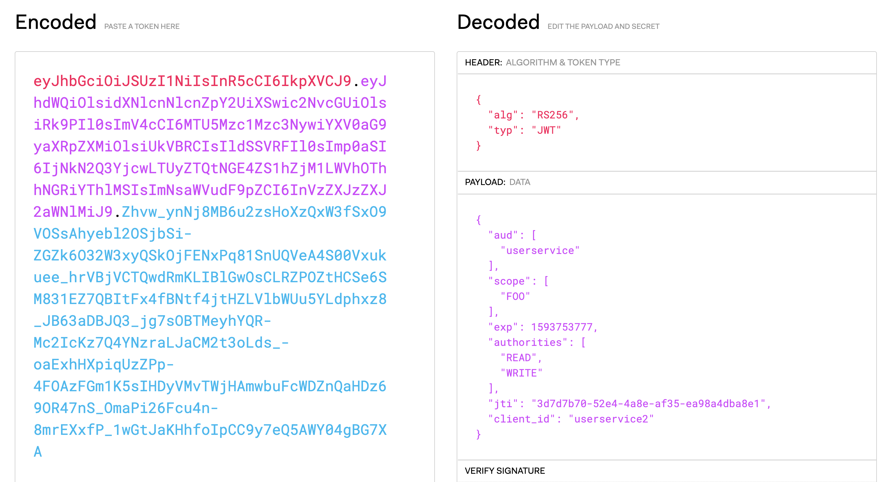
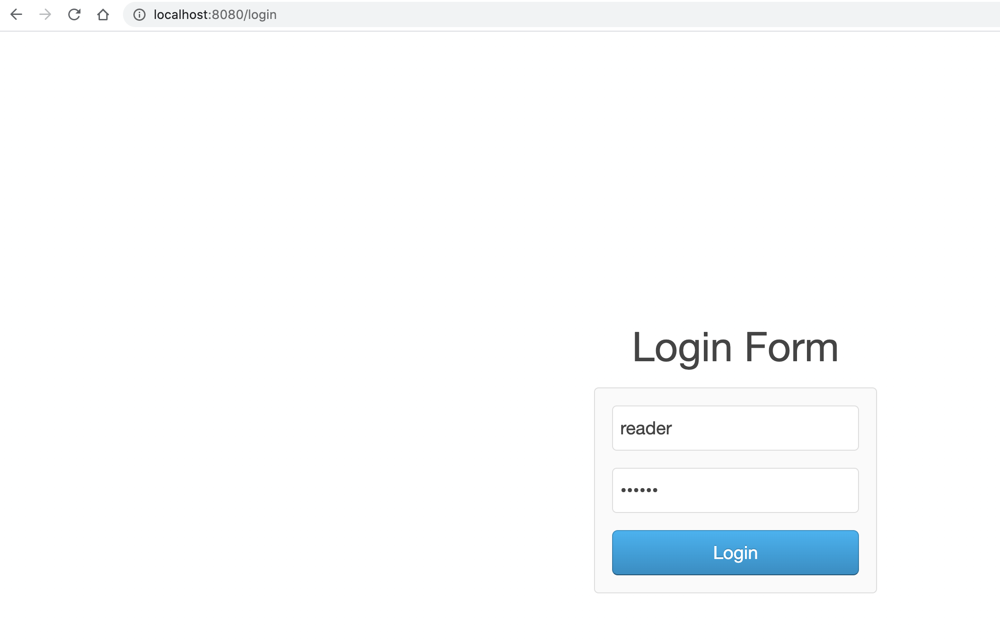
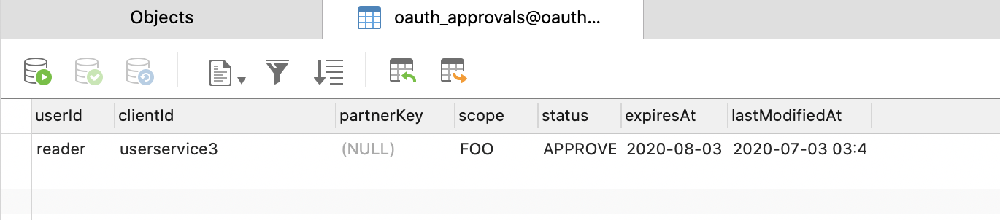

- 00 开篇词 为什么要学OAuth 2.0？.md.html
- 01 OAuth 2.0是要通过什么方式解决什么问题？.md.html
- 02 授权码许可类型中，为什么一定要有授权码？.md.html
- 03 授权服务：授权码和访问令牌的颁发流程是怎样的？.md.html
- 04 在OAuth 2.0中，如何使用JWT结构化令牌？.md.html
- 05 如何安全、快速地接入OAuth 2.0？.md.html
- 06 除了授权码许可类型，OAuth 2.0还支持什么授权流程？.md.html
- 07 如何在移动App中使用OAuth 2.0？.md.html
- 08 实践OAuth 2.0时，使用不当可能会导致哪些安全漏洞？.md.html
- 09 实战：利用OAuth 2.0实现一个OpenID Connect用户身份认证协议..md
- 10 串讲：OAuth 2.0的工作流程与安全问题.md.html
- 11 实战案例：使用Spring Security搭建一套基于JWT的OAuth 2.0架构.md.html
- 12 架构案例：基于OAuth 2.0_JWT的微服务参考架构.md.html
- 13 各大开放平台是如何使用OAuth 2.0的？.md.html
- 14 查漏补缺：OAuth 2.0 常见问题答疑.md.html
- 结束语 把学习当成一种习惯.md.html
- 捐赠
11 实战案例：使用Spring Security搭建一套基于JWT的OAuth 2.0架构
《OAuth 2.0 实战课》上线之后，我也第一时间关注了这门课。在开篇词中，我看到有一些同学留言问道：“如何使用 Spring Security 来实现 OAuth 2.0？”这时，我想到之前自己写过一篇相关的文章，于是就直接在开篇词下留了言。后面我很快收到了不少用户的点赞和肯定，紧接着极客时间编辑也邀请我从自己的角度为专栏写篇加餐。好吧，功不唐捐，于是我就将之前我写的那篇老文章再次迭代、整理为今天的这一讲内容，希望可以帮助你掌握 OAuth 2.0。
如果你熟悉 Spring Security 的话，肯定知道它因为功能多、组件抽象程度高、配置方式多样，导致了强大且复杂的特性。也因此，Spring Security 的学习成本几乎是 Spring 家族中最高的。但不仅于此，在结合实际的复杂业务场景使用 Spring Security 时，我们还要去理解一些组件的工作原理和流程，不然需要自定义和扩展框架的时候就会手足无措。这就让使用 Spring Security 的门槛更高了。
因此，在决定使用 Spring Security 搭建整套安全体系（授权、认证、权限、审计）之前，我们还需要考虑的是：将来我们的业务会多复杂，徒手写一套安全体系来得划算，还是使用 Spring Security 更好？我相信，这也是王老师给出课程配套代码中，并没有使用 Spring Security 来演示 OAuth 2.0 流程的原因之一。
反过来说，如果你的应用已经使用了 Spring Security 来做鉴权、认证和权限管理的话，那么仍然使用 Spring Security 来实现 OAuth 的成本是很低的。而且，在学习了 OAuth 2.0 的流程打下扎实的基础之后，我们再使用 Spring Security 来配置 OAuth 2.0 就不会那么迷茫了。这也是我在工作中使用 Spring Security 来实现 OAuth 2.0 的直观感受。
所以，我就结合自己的实践和积累，带你使用 Spring Security 来一步一步地搭建一套基于 JWT 的 OAuth 2.0 授权体系。这些内容会涉及 OAuth 2.0 的三角色（客户端、授权服务、受保护资源），以及资源拥有者凭据许可、客户端凭据许可和授权码许可这三种常用的授权许可类型（隐式许可类型，不太安全也不太常用）。同时，我还会演示 OAuth 2.0 的权限控制，以及使用 OAuth 2.0 实现 SSO 单点登录体系。
这样一来，今天这一讲涉及到的流程就会比较多，内容也会很长。不过不用担心，我会手把手带你从零开始，完成整个程序的搭建，并给出所有流程的演示。
项目准备工作
实战之前，我们先来搭建项目父依赖和初始化数据库结构，为后面具体的编码做准备。
首先，我们来创建一个父 POM，内含三个模块：
springsecurity101-cloud-oauth2-client，用来扮演客户端角色；
springsecurity101-cloud-oauth2-server，用来扮演授权服务器角色；
springsecurity101-cloud-oauth2-userservice，是用户服务，用来扮演资源提供者角色。
<project xmlns:xsi="http://www.w3.org/2001/XMLSchema-instance"
xmlns="http://maven.apache.org/POM/4.0.0"
xsi:schemaLocation="http://maven.apache.org/POM/4.0.0 http://maven.apache.org/xsd/maven-4.0.0.xsd">
<modelVersion>4.0.0</modelVersion>
<groupId>me.josephzhu</groupId>
<artifactId>springsecurity101</artifactId>
<packaging>pom</packaging>
<version>1.0-SNAPSHOT</version>
<parent>
<groupId>org.springframework.boot</groupId>
<artifactId>spring-boot-starter-parent</artifactId>
<version>2.2.1.RELEASE</version>
<relativePath/>
</parent>
<modules>
<module>springsecurity101-cloud-oauth2-client</module>
<module>springsecurity101-cloud-oauth2-server</module>
<module>springsecurity101-cloud-oauth2-userservice</module>
</modules>
<properties>
<project.build.sourceEncoding>UTF-8</project.build.sourceEncoding>
<project.reporting.outputEncoding>UTF-8</project.reporting.outputEncoding>
<java.version>1.8</java.version>
</properties>
<dependencies>
<dependency>
<groupId>org.projectlombok</groupId>
<artifactId>lombok</artifactId>
<optional>true</optional>
</dependency>
</dependencies>
<dependencyManagement>
<dependencies>
<dependency>
<groupId>org.springframework.cloud</groupId>
<artifactId>spring-cloud-dependencies</artifactId>
<version>Greenwich.SR4</version>
<type>pom</type>
<scope>import</scope>
</dependency>
</dependencies>
</dependencyManagement>
<build>
<plugins>
<plugin>
<groupId>org.springframework.boot</groupId>
<artifactId>spring-boot-maven-plugin</artifactId>
</plugin>
</plugins>
</build>
</project>
然后，我们来创建一个 oauth 数据库，初始化将来会用到的 5 个表。
authorities 表：记录账号的权限，需要我们在后面配置。
oauth_approvals 表：记录授权批准的状态。
oauth_client_details 表：记录 OAuth 的客户端，需要我们在后面做配置。
oauth_code 表：记录授权码。
users 表：记录账号，需要我们在后面做初始化。
SET NAMES utf8mb4;
SET FOREIGN_KEY_CHECKS = 0;
DROP TABLE IF EXISTS `authorities`;
CREATE TABLE `authorities` (
`username` varchar(50) NOT NULL,
`authority` varchar(50) NOT NULL,
UNIQUE KEY `ix_auth_username` (`username`,`authority`),
CONSTRAINT `fk_authorities_users` FOREIGN KEY (`username`) REFERENCES `users` (`username`)
) ENGINE=InnoDB DEFAULT CHARSET=utf8mb4;
DROP TABLE IF EXISTS `oauth_approvals`;
CREATE TABLE `oauth_approvals` (
`userId` varchar(256) DEFAULT NULL,
`clientId` varchar(256) DEFAULT NULL,
`partnerKey` varchar(32) DEFAULT NULL,
`scope` varchar(256) DEFAULT NULL,
`status` varchar(10) DEFAULT NULL,
`expiresAt` datetime DEFAULT NULL,
`lastModifiedAt` datetime DEFAULT NULL
) ENGINE=InnoDB DEFAULT CHARSET=utf8;
DROP TABLE IF EXISTS `oauth_client_details`;
CREATE TABLE `oauth_client_details` (
`client_id` varchar(255) NOT NULL,
`resource_ids` varchar(255) DEFAULT NULL,
`client_secret` varchar(255) DEFAULT NULL,
`scope` varchar(255) DEFAULT NULL,
`authorized_grant_types` varchar(255) DEFAULT NULL,
`web_server_redirect_uri` varchar(255) DEFAULT NULL,
`authorities` varchar(255) DEFAULT NULL,
`access_token_validity` int(11) DEFAULT NULL,
`refresh_token_validity` int(11) DEFAULT NULL,
`additional_information` varchar(4096) DEFAULT NULL,
`autoapprove` varchar(255) DEFAULT NULL,
PRIMARY KEY (`client_id`)
) ENGINE=InnoDB DEFAULT CHARSET=utf8mb4;
DROP TABLE IF EXISTS `oauth_code`;
CREATE TABLE `oauth_code` (
`code` varchar(255) DEFAULT NULL,
`authentication` blob
) ENGINE=InnoDB DEFAULT CHARSET=utf8mb4;
DROP TABLE IF EXISTS `users`;
CREATE TABLE `users` (
`username` varchar(50) NOT NULL,
`password` varchar(100) NOT NULL,
`enabled` tinyint(1) NOT NULL,
PRIMARY KEY (`username`)
) ENGINE=InnoDB DEFAULT CHARSET=utf8mb4;
SET FOREIGN_KEY_CHECKS = 1;
这 5 个表是 Spring Security OAuth 需要用到的存储表，我们不要去修改既有的表结构。这里可以看到，我们并没有在数据库中创建相应的表，来存放访问令牌和刷新令牌。这是因为，我们之后的实现会使用 JWT 来传输令牌信息，以便进行本地校验，所以并不一定要将其存放到数据库中。基本上所有的这些表都是可以自己扩展的，只需要继承实现 Spring 的一些既有类即可，这里不做展开。
接下来，我们开始搭建授权服务器和受保护资源服务器。
搭建授权服务器
我们先创建第一个模块，也就是授权服务器。首先创建 POM，配置依赖：
<?xml version="1.0" encoding="UTF-8"?>
<project xmlns:xsi="http://www.w3.org/2001/XMLSchema-instance"
xmlns="http://maven.apache.org/POM/4.0.0"
xsi:schemaLocation="http://maven.apache.org/POM/4.0.0 http://maven.apache.org/xsd/maven-4.0.0.xsd">
<parent>
<artifactId>springsecurity101</artifactId>
<groupId>me.josephzhu</groupId>
<version>1.0-SNAPSHOT</version>
</parent>
<modelVersion>4.0.0</modelVersion>
<artifactId>springsecurity101-cloud-oauth2-server</artifactId>
<dependencies>
<dependency>
<groupId>org.springframework.cloud</groupId>
<artifactId>spring-cloud-starter-oauth2</artifactId>
</dependency>
<dependency>
<groupId>org.springframework.boot</groupId>
<artifactId>spring-boot-starter-jdbc</artifactId>
</dependency>
<dependency>
<groupId>mysql</groupId>
<artifactId>mysql-connector-java</artifactId>
</dependency>
<dependency>
<groupId>org.springframework.boot</groupId>
<artifactId>spring-boot-starter-web</artifactId>
</dependency>
<dependency>
<groupId>org.springframework.boot</groupId>
<artifactId>spring-boot-starter-thymeleaf</artifactId>
</dependency>
</dependencies>
</project>
这里，我们使用了 Spring Cloud 的 spring-cloud-starter-oauth2 组件，而不是直接使用的 Spring Security，因为前者做了一些自动化配置的工作，使用起来会更方便。
此外，我们还在 POM 中加入了数据访问、Web 等依赖，因为我们的受保护资源服务器需要使用数据库来保存客户端的信息、用户信息等数据，同时也会引入 thymeleaf 模板引擎依赖，来稍稍美化一下登录页面。
然后创建一个配置文件 application.yml 实现程序配置：
server:
port: 8080
spring:
application:
name: oauth2-server
datasource:
url: jdbc:mysql://localhost:6657/oauth?useSSL=false
username: root
password: kIo9u7Oi0eg
driver-class-name: com.mysql.jdbc.Driver
可以看到，我们配置了 oauth 数据库的连接字符串，定义了授权服务器的监听端口是 8080。
最后，使用 keytool 工具生成密钥对，把密钥文件 jks 保存到资源目录下，并要导出一个公钥留作以后使用。
以上完成了项目框架搭建工作，接下来，我们正式开始编码。
第一步，创建一个最核心的类用于配置授权服务器。我把每段代码的作用放在了注释里，你可以直接看下。
@Configuration
@EnableAuthorizationServer
public class OAuth2ServerConfiguration extends AuthorizationServerConfigurerAdapter {
@Autowired
private DataSource dataSource;
@Autowired
private AuthenticationManager authenticationManager;
* 我们配置了使用数据库来维护客户端信息。虽然在各种Demo中我们经常看到的是在内存中维护客户端信息，通过配置直接写死在这里。
* 但是，对于实际的应用我们一般都会用数据库来维护这个信息，甚至还会建立一套工作流来允许客户端自己申请ClientID，实现OAuth客户端接入的审批。
/*
* @param clients
* @throws Exception
*/
@Override
public void configure(ClientDetailsServiceConfigurer clients) throws Exception {
clients.jdbc(dataSource);
}
/*
* 这里干了两件事儿。首先，打开了验证Token的访问权限（以便之后我们演示）。
* 然后，允许ClientSecret明文方式保存，并且可以通过表单提交（而不仅仅是Basic Auth方式提交），之后会演示到这个。
* @param security
* @throws Exception
*/
@Override
public void configure(AuthorizationServerSecurityConfigurer security) throws Exception {
security.checkTokenAccess("permitAll()").allowFormAuthenticationForClients().passwordEncoder(NoOpPasswordEncoder.getInstance());
}
/*
* 干了以下4件事儿：
* 1. 配置我们的令牌存放方式为JWT方式，而不是内存、数据库或Redis方式。
* JWT是Json Web Token的缩写，也就是使用JSON数据格式包装的令牌，由.号把整个JWT分隔为头、数据体、签名三部分。
* JWT保存Token虽然易于使用但是不是那么安全，一般用于内部，且需要走HTTPS并配置比较短的失效时间。
* 2. 配置JWT Token的非对称加密来进行签名
* 3. 配置一个自定义的Token增强器，把更多信息放入Token中
* 4. 配置使用JDBC数据库方式来保存用户的授权批准记录
* @param endpoints
* @throws Exception
*/
@Override
public void configure(AuthorizationServerEndpointsConfigurer endpoints) {
TokenEnhancerChain tokenEnhancerChain = new TokenEnhancerChain();
tokenEnhancerChain.setTokenEnhancers(
Arrays.asList(tokenEnhancer(), jwtTokenEnhancer()));
endpoints.approvalStore(approvalStore())
.authorizationCodeServices(authorizationCodeServices())
.tokenStore(tokenStore())
.tokenEnhancer(tokenEnhancerChain)
.authenticationManager(authenticationManager);
}
/*
* 使用JDBC数据库方式来保存授权码
* @return
*/
@Bean
public AuthorizationCodeServices authorizationCodeServices() {
return new JdbcAuthorizationCodeServices(dataSource);
}
/*
* 使用JWT存储
* @return
*/
@Bean
public TokenStore tokenStore() {
return new JwtTokenStore(jwtTokenEnhancer());
}
/*
* 使用JDBC数据库方式来保存用户的授权批准记录
* @return
*/
@Bean
public JdbcApprovalStore approvalStore() {
return new JdbcApprovalStore(dataSource);
}
/*
* 自定义的Token增强器，把更多信息放入Token中
* @return
*/
@Bean
public TokenEnhancer tokenEnhancer() {
return new CustomTokenEnhancer();
}
/*
* 配置JWT使用非对称加密方式来验证
* @return
*/
@Bean
protected JwtAccessTokenConverter jwtTokenEnhancer() {
KeyStoreKeyFactory keyStoreKeyFactory = new KeyStoreKeyFactory(new ClassPathResource("jwt.jks"), "mySecretKey".toCharArray());
JwtAccessTokenConverter converter = new JwtAccessTokenConverter();
converter.setKeyPair(keyStoreKeyFactory.getKeyPair("jwt"));
return converter;
}
/*
* 配置登录页面的视图信息（其实可以独立一个配置类，这样会更规范）
*/
@Configuration
static class MvcConfig implements WebMvcConfigurer {
@Override
public void addViewControllers(ViewControllerRegistry registry) {
registry.addViewController("login").setViewName("login");
}
}
}
第二步，还记得吗，刚才在第一步的代码中我们还用到了一个自定义的 Token 增强器，把用户信息嵌入到 JWT Token 中去（如果使用的是客户端凭据许可类型，这段代码无效，因为和用户没关系）。
这是一个常见需求。因为，默认情况下 Token 中只会有用户名这样的基本信息，我们往往需要把关于用户的更多信息返回给客户端（在实际应用中，你可能会从数据库或外部服务查询更多的用户信息加入到 JWT Token 中去）。这个时候，我们就可以自定义增强器来丰富 Token 的内容：
public class CustomTokenEnhancer implements TokenEnhancer {
@Override
public OAuth2AccessToken enhance(OAuth2AccessToken accessToken, OAuth2Authentication authentication) {
Authentication userAuthentication = authentication.getUserAuthentication();
if (userAuthentication != null) {
Object principal = authentication.getUserAuthentication().getPrincipal();
Map<String, Object> additionalInfo = new HashMap<>();
additionalInfo.put("userDetails", principal);
((DefaultOAuth2AccessToken) accessToken).setAdditionalInformation(additionalInfo);
}
return accessToken;
}
}
第三步，实现安全方面的配置。你可以直接看下代码注释，来了解关键代码的作用。
@Configuration
public class WebSecurityConfig extends WebSecurityConfigurerAdapter {
@Autowired
private DataSource dataSource;
@Override
@Bean
public AuthenticationManager authenticationManagerBean() throws Exception {
return super.authenticationManagerBean();
}
/*
* 配置用户账户的认证方式。显然，我们把用户存在了数据库中希望配置JDBC的方式。
* 此外，我们还配置了使用BCryptPasswordEncoder哈希来保存用户的密码（生产环境中，用户密码肯定不能是明文保存的）
* @param auth
* @throws Exception
*/
@Override
protected void configure(AuthenticationManagerBuilder auth) throws Exception {
auth.jdbcAuthentication()
.dataSource(dataSource)
.passwordEncoder(new BCryptPasswordEncoder());
}
/*
* 开放/login和/oauth/authorize两个路径的匿名访问。前者用于登录，后者用于换授权码，这两个端点访问的时机都在登录之前。
* 设置/login使用表单验证进行登录。
* @param http
* @throws Exception
*/
@Override
protected void configure(HttpSecurity http) throws Exception {
http.authorizeRequests()
.antMatchers("/login", "/oauth/authorize")
.permitAll()
.anyRequest().authenticated()
.and()
.formLogin().loginPage("/login");
}
}
第四步，在资源目录下创建一个 templates 文件夹，然后创建一个 login.html 登录页：
<body class="uk-height-1-1">
<div class="uk-vertical-align uk-text-center uk-height-1-1">
<div class="uk-vertical-align-middle" style="width: 250px;">
<h1>Login Form</h1>
<p class="uk-text-danger" th:if="${param.error}">
用户名或密码错误...
</p>
<form class="uk-panel uk-panel-box uk-form" method="post" th:action="@{/login}">
<div class="uk-form-row">
<input class="uk-width-1-1 uk-form-large" type="text" placeholder="Username" name="username"
value="reader"/>
</div>
<div class="uk-form-row">
<input class="uk-width-1-1 uk-form-large" type="password" placeholder="Password" name="password"
value="reader"/>
</div>
<div class="uk-form-row">
<button class="uk-width-1-1 uk-button uk-button-primary uk-button-large">Login</button>
</div>
</form>
</div>
</div>
</body>
至此，授权服务器的编码工作就完成了。
搭建受保护资源服务器
接下来，我们搭建一个用户服务模拟资源提供者（受保护资源服务器）。我们先看看项目初始化工作。
这次创建的 POM 没有什么特殊，依赖了 spring-cloud-starter-oauth2：
<?xml version="1.0" encoding="UTF-8"?>
<project xmlns:xsi="http://www.w3.org/2001/XMLSchema-instance"
xmlns="http://maven.apache.org/POM/4.0.0"
xsi:schemaLocation="http://maven.apache.org/POM/4.0.0 http://maven.apache.org/xsd/maven-4.0.0.xsd">
<parent>
<artifactId>springsecurity101</artifactId>
<groupId>me.josephzhu</groupId>
<version>1.0-SNAPSHOT</version>
</parent>
<modelVersion>4.0.0</modelVersion>
<artifactId>springsecurity101-cloud-oauth2-userservice</artifactId>
<dependencies>
<dependency>
<groupId>org.springframework.cloud</groupId>
<artifactId>spring-cloud-starter-oauth2</artifactId>
</dependency>
<dependency>
<groupId>org.springframework.boot</groupId>
<artifactId>spring-boot-starter-web</artifactId>
</dependency>
</dependencies>
</project>
配置文件非常简单，只是声明了资源服务端口为 8081：
同时，还要记得把我们之前在项目准备工作时生成的密钥对的公钥命名为 public.cert，并放到资源文件下。这样，资源服务器可以本地校验 JWT 的合法性。内容大概是这样的：
MIIBIjANBgkqhkiG9w0BAQEFAAOCAQ8AMIIBCgKCAQEAwR84LFHwnK5GXErnwkmD
mPOJl4CSTtYXCqmCtlbF+5qVOosu0YsM2DsrC9O2gun6wVFKkWYiMoBSjsNMSI3Z
w5JYgh+ldHvA+MIex2QXfOZx920M1fPUiuUPgmnTFS+Z3lmK3/T6jJnmciUPY1pe
h4MXL6YzeI0q4W9xNBBeKT6FDGpduc0FC3OlXHfLbVOThKmAUpAWFDwf9/uUA//l
3PLchmV6VwTcUaaHp5W8Af/GU4lPGZbTAqOxzB9ukisPFuO1DikacPhrOQgdxtqk
LciRTa884uQnkFwSguOEUYf3ni8GNRJauIuW0rVXhMOs78pKvCKmo53M0tqeC6ul
+QIDAQAB
好了，让我们正式开始编码吧。
第一步，创建一个可以匿名访问的接口 GET /hello，用来测试无需登录就可以访问的服务端资源：
@RestController
public class HelloController {
@GetMapping("hello")
public String hello() {
return "Hello";
}
}
第二步，创建三个需要登录 + 授权才能访问到的接口。我们通过 @PreAuthorize 在方法执行前进行权限控制：
GET /user/name 接口，读权限或写权限可访问，返回登录用户名；
GET /user 接口，读权限或写权限可访问，返回登录用户信息；
POST /user 接口，只有写权限可以访问，返回访问令牌中的额外信息（也就是自定义的 Token 增强器 CustomTokenEnhancer 加入到访问令牌中的额外信息，Key 是 userDetails），这里也演示了使用 TokenStore 来解析 Token 的方式。
@RestController
@RequestMapping("user")
public class UserController {
@Autowired
private TokenStore tokenStore;
/*
* 读权限或写权限可访问，返回登录用户名
* @param authentication
* @return
*/
@PreAuthorize("hasAuthority('READ') or hasAuthority('WRITE')")
@GetMapping("name")
public String name(OAuth2Authentication authentication) {
return authentication.getName();
}
/*
* 读权限或写权限可访问，返回登录用户信息
* @param authentication
* @return
*/
@PreAuthorize("hasAuthority('READ') or hasAuthority('WRITE')")
@GetMapping
public OAuth2Authentication read(OAuth2Authentication authentication) {
return authentication;
}
/*
* 只有写权限可以访问，返回访问令牌中的额外信息
* @param authentication
* @return
*/
@PreAuthorize("hasAuthority('WRITE')")
@PostMapping
public Object write(OAuth2Authentication authentication) {
OAuth2AuthenticationDetails details = (OAuth2AuthenticationDetails) authentication.getDetails();
OAuth2AccessToken accessToken = tokenStore.readAccessToken(details.getTokenValue());
return accessToken.getAdditionalInformation().getOrDefault("userDetails", null);
}
}
第三步，创建核心的资源服务器配置类。这里我们需要注意下面两点：
我们硬编码了资源服务器的 ID 为 userservice；
现在我们使用的是不落数据库的 JWT 方式 + 非对称加密，需要通过本地公钥进行验证，因此在这里我们配置了公钥的路径。
@Configuration
@EnableResourceServer
@EnableGlobalMethodSecurity(prePostEnabled = true)
public class ResourceServerConfiguration extends ResourceServerConfigurerAdapter {
/*
* 声明了资源服务器的ID是userservice，声明了资源服务器的TokenStore是JWT
* @param resources
* @throws Exception
*/
@Override
public void configure(ResourceServerSecurityConfigurer resources) throws Exception {
resources.resourceId("userservice").tokenStore(tokenStore());
}
/*
* 配置TokenStore
* @return
*/
@Bean
public TokenStore tokenStore() {
return new JwtTokenStore(jwtAccessTokenConverter());
}
/*
* 配置公钥
* @return
*/
@Bean
protected JwtAccessTokenConverter jwtAccessTokenConverter() {
JwtAccessTokenConverter converter = new JwtAccessTokenConverter();
Resource resource = new ClassPathResource("public.cert");
String publicKey = null;
try {
publicKey = new String(FileCopyUtils.copyToByteArray(resource.getInputStream()));
} catch (IOException e) {
e.printStackTrace();
}
converter.setVerifierKey(publicKey);
return converter;
}
/*
* 配置了除了/user路径之外的请求可以匿名访问
* @param http
* @throws Exception
*/
@Override
public void configure(HttpSecurity http) throws Exception {
http.authorizeRequests()
.antMatchers("/user/**").authenticated()
.anyRequest().permitAll();
}
}
到这里，我们来想一下，如果授权服务器产生 Token 的话，受保护资源服务器必须要有一种办法来验证 Token，那如果这里的 Token 不是 JWT 的方式，我们可以怎么办呢？
我来说下我的方法吧：
首先，Token 可以保存在数据库或 Redis 中，资源服务器和授权服务器共享底层的 TokenStore 来验证；
然后，资源服务器可以使用 RemoteTokenServices，来从授权服务器的 /oauth/check_token 端点进行 Token 校验。
到这里，资源服务器就配置完成了，我们还在资源服务器中分别创建了两个控制器 HelloController 和 UserController，用于分别测试可以匿名访问以及受到权限保护的资源。
初始化数据配置
在实现了授权服务器和受保护资源服务器代码后，我们再来初始化 oauth 数据库的数据就非常容易理解了。总结起来，我们需要配置用户、权限和客户端三部分。
配置两个用户。其中，读用户 reader 具有读权限，密码为 reader；写用户 writer 具有读写权限，密码为 writer。还记得吗，密码我们使用的是 BCryptPasswordEncoder 加密（准确说是哈希）？
INSERT INTO `users` VALUES ('reader', '$2a$04$C6pPJvC1v6.enW6ZZxX.luTdpSI/1gcgTVN7LhvQV6l/AfmzNU/3i', 1);
INSERT INTO `users` VALUES ('writer', '$2a$04$M9t2oVs3/VIreBMocOujqOaB/oziWL0SnlWdt8hV4YnlhQrORA0fS', 1);
配置两个权限，也就是配置 reader 用户具有读权限，writer 用户具有写权限：
INSERT INTO `authorities` VALUES ('reader', 'READ');
INSERT INTO `authorities` VALUES ('writer', 'READ,WRITE');
配置三个客户端，其中客户端 userservice1 使用资源拥有者凭据许可类型，客户端 userservice2 使用客户端凭据许可类型，客户端 userservice3 使用授权码许可类型。
INSERT INTO `oauth_client_details` VALUES ('userservice1', 'userservice', '1234', 'FOO', 'password,refresh_token', '', 'READ,WRITE', 7200, NULL, NULL, 'true');
INSERT INTO `oauth_client_details` VALUES ('userservice2', 'userservice', '1234', 'FOO', 'client_credentials,refresh_token', '', 'READ,WRITE', 7200, NULL, NULL, 'true');
INSERT INTO `oauth_client_details` VALUES ('userservice3', 'userservice', '1234', 'FOO', 'authorization_code,refresh_token', 'https://baidu.com,http://localhost:8082/ui/login,http://localhost:8083/ui/login,http://localhost:8082/ui/remoteCall', 'READ,WRITE', 7200, NULL, NULL, 'false');
值得说明的是：
三个客户端账号能使用的资源 ID 都是 userservice，对应我们受保护资源服务器刚才配置的资源 ID，也就是 userservice，这两者需要一致。
三个客户端账号的密码都是 1234。
三个客户端账号的授权范围都是 FOO（并不是关键信息），它们可以拿到的权限是读写。不过，对于和用户相关的授权许可类型（比如资源拥有者凭据许可、授权码许可），最终拿到的权限还取决于客户端权限和用户权限的交集。
通过 grant_types 字段配置支持不同的授权许可类型。这里为了便于测试观察，我们给三个客户端账号各自配置了一种授权许可类型；在实际业务场景中，你完全可以为同一个客户端配置支持 OAuth 2.0 的四种授权许可类型。
userservice1 和 userservice2 我们配置了用户自动批准授权（不会弹出一个页面要求用户进行授权）。
演示三种授权许可类型
到这里，授权服务器和受保护资源服务器程序都搭建完成了，数据库也配置了用于测试的用户、权限和客户端。接下来，我们就使用 Postman 来手工测试一下 OAuth 2.0 的授权码许可、资源拥有者凭据许可、客户端凭据许可这三种授权许可类型吧。
资源拥有者凭据许可类型
首先，我们测试的是资源拥有者凭据许可，POST 请求地址是：
http://localhost:8080/oauth/token?grant_type=password&client_id=userservice1&client_secret=1234&username=writer&password=writer
得到如下图所示结果：


可以看到，Token 中果然包含了 Token 增强器加入的 userDetails 自定义信息。如果我们把公钥粘贴到页面的话，可以看到这个 JWT 校验成功了：
除了本地校验外，还可以访问授权服务器来校验 JWT：
http://localhost:8080/oauth/check_token?client_id=userservice1&client_secret=1234&token=...
得到如下结果：
客户端授权许可类型
我们再来测试下客户端授权许可类型。POST 请求地址：
http://localhost:8080/oauth/token?grant_type=client_credentials&client_id=userservice2&client_secret=1234
如下图所示，可以直接拿到 Token：
这里需要注意的是，并没有提供刷新令牌。这是因为，刷新令牌用于避免访问令牌失效后需要用户再次登录的问题，而客户端授权许可类型没有用户的概念，因此没有刷新令牌，也无法注入额外的 userDetails 信息。

也可以试一下，如果我们的授权服务器没有开启 allowFormAuthenticationForClients 参数（允许表单提交认证）的话，客户端的凭证需要通过 Basic Auth 传过去而不是通过 Post：
授权码许可类型
最后，我们来测试下比较复杂的授权码许可。
第一步，打开浏览器访问地址：
http://localhost:8080/oauth/authorize?response_type=code&client_id=userservice3&redirect_uri=https://baidu.com
我们之前已经在数据库中有配置了）。访问后页面会直接跳转到登录界面，我们使用用户名“reader”、密码“reader”来登录：

由于我们在数据库中设置的是禁用自动批准授权的模式，所以登录后来到了批准界面：
点击同意后可以看到，数据库中也会产生授权通过记录：

第二步，我们可以看到浏览器转到了百度并且提供给了我们授权码：
数据库中也记录了授权码：
然后 POST 访问下面的地址（code 参数替换为刚才获得的授权码）：
http://localhost:8080/oauth/token?grant_type=authorization_code&client_id=userservice3&client_secret=1234&code=XKkHGY&redirect_uri=https://baidu.com
可以通过授权码换取访问令牌：
虽然 userservice3 客户端可以有读权限和写权限，但是因为我们登录的用户 reader 只有读权限，所以最后拿到也只有读权限。
演示权限控制
现在我们来测试一下之前定义的两个账号，也就是读账号和写账号，看看它们的权限控制是否有效。
首先，测试一下我们的安全配置，访问 /hello 端点不需要认证可以匿名访问：
访问 /user 需要身份认证：
不管以哪种模式拿到访问令牌，我们用具有读权限的访问令牌访问资源服务器的如下地址
（请求头加入 Authorization: Bearer XXXXXXXXXX，其中 XXXXXXXXXX 代表访问令牌）：
http://localhost:8081/user/
可以得到如下结果：
以 POST 方式访问 http://localhost:8081/user/，显然是失败的：
因为这个接口要求有写权限：
@PreAuthorize("hasAuthority('WRITE')")
@PostMapping
public Object write(OAuth2Authentication authentication) {
我们换一个具有读写权限的访问令牌来试试：
可以发现，果然访问成功了。这里输出的内容是 Token 中的 userDetails 额外信息，说明资源服务器的权限控制有效。
搭建客户端程序
在上面的演示中，我们使用的是 Postman，也就是手动 HTTP 请求的方式来申请和使用 Token。最后，我们来搭建一个 OAuth 客户端程序自动实现这个过程。
<?xml version="1.0" encoding="UTF-8"?>
<project xmlns:xsi="http://www.w3.org/2001/XMLSchema-instance"
xmlns="http://maven.apache.org/POM/4.0.0"
xsi:schemaLocation="http://maven.apache.org/POM/4.0.0 http://maven.apache.org/xsd/maven-4.0.0.xsd">
<parent>
<artifactId>springsecurity101</artifactId>
<groupId>me.josephzhu</groupId>
<version>1.0-SNAPSHOT</version>
</parent>
<artifactId>springsecurity101-cloud-oauth2-client</artifactId>
<modelVersion>4.0.0</modelVersion>
<dependencies>
<dependency>
<groupId>org.springframework.cloud</groupId>
<artifactId>spring-cloud-starter-oauth2</artifactId>
</dependency>
<dependency>
<groupId>org.springframework.boot</groupId>
<artifactId>spring-boot-starter-web</artifactId>
</dependency>
<dependency>
<groupId>org.springframework.boot</groupId>
<artifactId>spring-boot-starter-thymeleaf</artifactId>
</dependency>
</dependencies>
</project>
配置文件如下：
server:
port: 8083
servlet:
context-path: /ui
security:
oauth2:
client:
clientId: userservice3
clientSecret: 1234
accessTokenUri: http://localhost:8080/oauth/token
userAuthorizationUri: http://localhost:8080/oauth/authorize
scope: FOO
resource:
jwt:
key-value: |
-----BEGIN PUBLIC KEY-----
***
-----END PUBLIC KEY-----
spring:
thymeleaf:
cache: false
客户端项目端口 8082，几个需要说明的地方：
本地测试的时候有一个坑，也就是我们需要配置 context-path，否则可能会出现客户端和授权服务器服务端 Cookie 干扰，导致 CSRF 防御触发的问题。这个问题出现后程序没有任何错误日志输出，只有开启 DEBUG 模式后才能看到 DEBUG 日志里有提示，因此这个问题非常难以排查。说实话，我也不知道 Spring 为什么不把这个信息作为 WARN 级别的日志输出。
作为 OAuth 客户端，我们需要配置 OAuth 服务端获取 Token 的地址、授权（获取授权码）的地址，需要配置客户端的 ID、密码和授权范围。
因为使用的是 JWT Token，我们需要配置公钥（当然，如果不在这里直接配置公钥的话，也可以配置从授权服务器服务端获取公钥）。
接下来，我们可以开始编码了。
第一步，实现 MVC 的配置：
@Configuration
@EnableWebMvc
public class WebMvcConfig implements WebMvcConfigurer {
/*
* 配置RequestContextListener用于启用session scope的Bean
* @return
*/
@Bean
public RequestContextListener requestContextListener() {
return new RequestContextListener();
}
/*
* 配置index路径的首页Controller
* @param registry
*/
@Override
public void addViewControllers(ViewControllerRegistry registry) {
registry.addViewController("/")
.setViewName("forward:/index");
registry.addViewController("/index");
}
}
这里做了两件事情：
配置 RequestContextListener，用于启用 session scope 的 Bean；
配置了 index 路径的首页 Controller。
第二步，实现安全方面的配置：
@Configuration
@Order(200)
public class WebSecurityConfig extends WebSecurityConfigurerAdapter {
/*
* /路径和/login路径允许访问，其它路径需要身份认证后才能访问
* @param http
* @throws Exception
*/
@Override
protected void configure(HttpSecurity http) throws Exception {
http
.authorizeRequests()
.antMatchers("/", "/login**")
.permitAll()
.anyRequest()
.authenticated();
}
}
这里我们实现的是 / 路径和 /login 路径允许访问，其它路径需要身份认证后才能访问。
第三步，我们来创建一个控制器：
@RestController
public class DemoController {
@Autowired
OAuth2RestTemplate restTemplate;
@GetMapping("/securedPage")
public ModelAndView securedPage(OAuth2Authentication authentication) {
return new ModelAndView("securedPage").addObject("authentication", authentication);
}
@GetMapping("/remoteCall")
public String remoteCall() {
ResponseEntity<String> responseEntity = restTemplate.getForEntity("http://localhost:8081/user/name", String.class);
return responseEntity.getBody();
}
}
这里我们实现了两个功能：
securedPage 页面，实现的功能是，把用户信息作为模型传入了视图，这样打开页面后就能显示用户名和权限。
remoteCall 接口，实现的功能是，通过引入 OAuth2RestTemplate，在登录后就可以使用凭据直接从受保护资源服务器拿资源，不需要繁琐地实现获得访问令牌、在请求头里加入访问令牌的过程。
第四步，配置一下刚才用到的 OAuth2RestTemplate Bean，并启用 OAuth2Sso 功能：
@Configuration
@EnableOAuth2Sso
public class OAuthClientConfig {
/*
* 定义了OAuth2RestTemplate，网上一些比较老的资料给出的是手动读取配置文件来实现，最新版本已经可以自动注入OAuth2ProtectedResourceDetails
* @param oAuth2ClientContext
* @param details
* @return
*/
@Bean
public OAuth2RestTemplate oauth2RestTemplate(OAuth2ClientContext oAuth2ClientContext,
OAuth2ProtectedResourceDetails details) {
return new OAuth2RestTemplate(details, oAuth2ClientContext);
}
}
第五步，实现首页：
<body>
<div class="container">
<div class="col-sm-12">
<h1>Spring Security SSO Client</h1>
<a class="btn btn-primary" href="securedPage">Login</a>
</div>
</div>
</body>
以及登录后才能访问的 securedPage 页面：
<body>
<div class="container">
<div class="col-sm-12">
<h1>Secured Page</h1>
Welcome, <span th:text="${authentication.name}">Name</span>
<br />
Your authorities are <span th:text="${authentication.authorities}">authorities</span>
</div>
</div>
</body>
演示单点登录
好，客户端程序搭建好之后，我们先来测试一下单点登录的功能。启动客户端项目，打开浏览器访问：
http://localhost:8082/ui/securedPage
可以看到，页面自动转到了授权服务器（8080 端口）的登录页面：
登录后显示了当前用户名和权限：
我们再启动另一个客户端网站，端口改为 8083，然后访问同样的地址：
可以看到直接是登录状态，单点登录测试成功。是不是很方便？其实，为了达成单点登录的效果，程序在背后自动实现了多次 302 重定向，整个流程为：
http://localhost:8083/ui/securedPage ->
http://localhost:8083/ui/login ->
http://localhost:8080/oauth/authorize?client_id=userservice3&redirect_uri=http://localhost:8083/ui/login&response_type=code&scope=FOO&state=Sobjqe ->
http://localhost:8083/ui/login?code=CDdvHa&state=Sobjqe ->
http://localhost:8083/ui/securedPage
演示客户端请求资源服务器资源
还记得吗，在上一节“搭建客户端程序”中，我们还定义了一个 remoteCall 接口，直接使用 OAuth2RestTemplate 来访问远程资源服务器的资源。现在，我们来测试一下这个接口是否可以实现自动的 OAuth 流程。访问：
http://localhost:8082/ui/remoteCall
会先转到授权服务器登录，登录后自动跳转回来：
可以看到输出了用户名，对应的资源服务器服务端接口是：
@PreAuthorize("hasAuthority('READ') or hasAuthority('WRITE')")
@GetMapping("name")
public String name(OAuth2Authentication authentication) {
return authentication.getName();
}
换一个 writer 用户登录试试，也能得到正确的输出：
总结
今天这一讲，我们完整演示了如何使用 Spring Cloud 的 OAuth 2.0 组件基于三个程序角色（授权服务器、受保护资源服务器和客户端）实现三种 OAuth 2.0 的授权许可类型（资源拥有者凭据许可、客户端凭据许可和授权码许可）。
我们先演示了三种授权许可类型的手动流程，然后也演示了如何实现权限控制和单点登录，以及如何使用客户端程序来实现自动的 OAuth 2.0 流程。
我把今天用到的所有代码都放到了 GitHub 上，你可以点击这个链接查看。
© 2019 - 2023 Liangliang Lee. Powered by gin and hexo-theme-book.